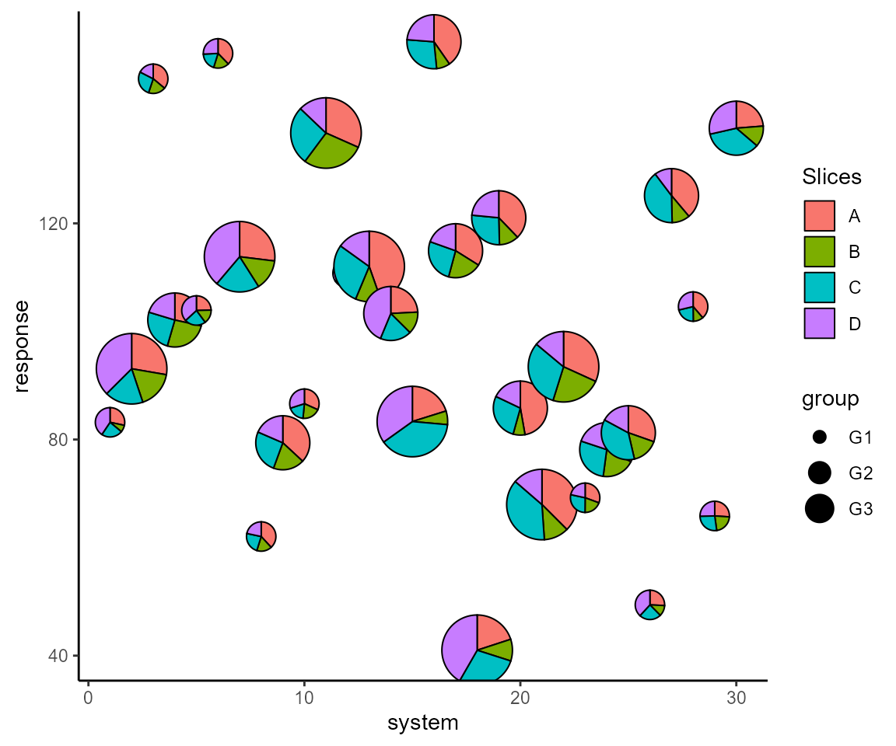
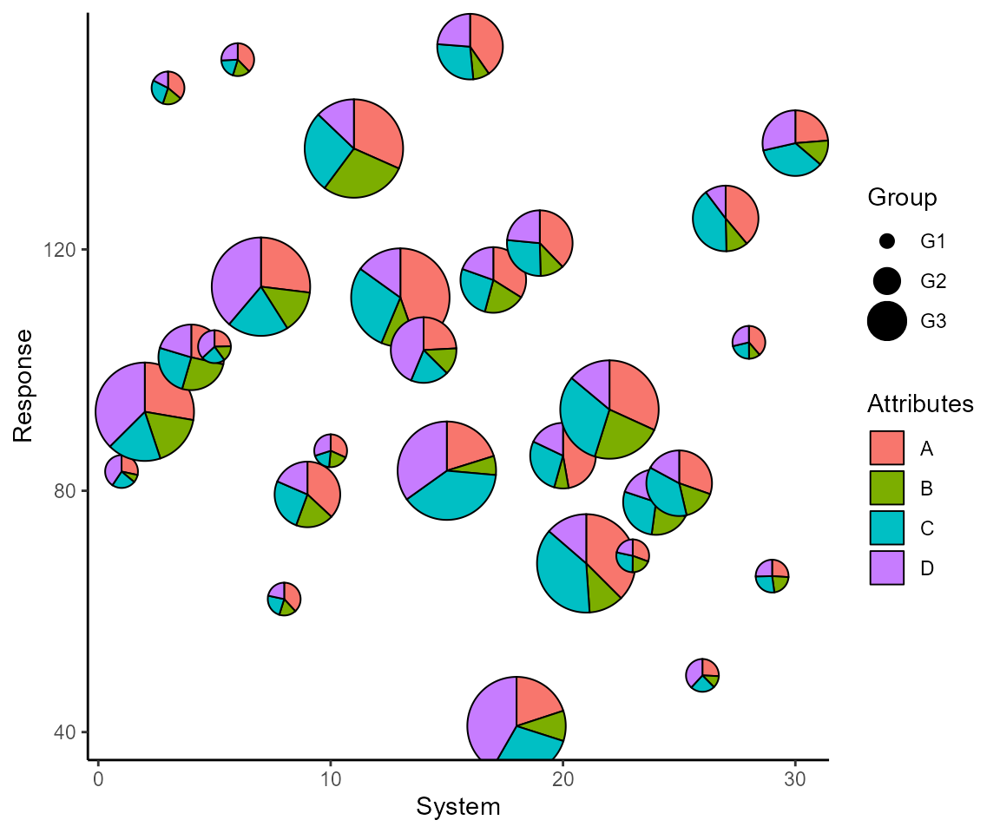

PieGlyph is an R package aimed at replacing points in a
plot with pie-chart glyphs, showing the relative proportions of
different categories. The pie-chart glyphs are invariant to the axes and
plot dimensions to prevent distortions when the plot dimensions are
changed.
Examples
Simulate raw data
set.seed(123)
plot_data <- data.frame(response = rnorm(30, 100, 30),
system = 1:30,
group = sample(size = 30, x = c('G1', 'G2', 'G3'), replace = T),
A = round(runif(30, 3, 9), 2),
B = round(runif(30, 1, 5), 2),
C = round(runif(30, 3, 7), 2),
D = round(runif(30, 1, 9), 2))
The data has 30 observations and seven columns. response is
a continuous variable measuring system output while system
describes the 30 individual systems of interest. Each system is placed
in one of three groups shown in group. Columns
A, B, C, and D
measure system attributes.
head(plot_data)
#> response system group A B C D
#> 1 83.18573 1 G1 5.80 1.57 4.78 8.31
#> 2 93.09468 2 G3 6.07 3.76 3.87 8.21
#> 3 146.76125 3 G1 6.60 3.48 5.01 3.19
#> 4 102.11525 4 G2 5.00 4.57 4.42 3.57
#> 5 103.87863 5 G1 5.93 3.69 5.60 8.89
#> 6 151.45195 6 G1 8.73 3.95 4.50 5.96Create scatter plot with pie-charts
We can plot the outputs for each system as a scatterplot and replace the points with pie-chart glyphs showing the relative proportions of the four system attributes
Basic plot
ggplot(data = plot_data, aes(x = system, y = response))+
geom_pie_glyph(slices = c('A', 'B', 'C', 'D'))+
theme_classic()
Change pie radius and border colour
ggplot(data = plot_data, aes(x = system, y = response))+
# Can also specify slices as column indices
geom_pie_glyph(slices = 4:7, colour = 'black', radius = 0.5)+
theme_classic()Map radius to a variable
p <- ggplot(data = plot_data, aes(x = system, y = response))+
geom_pie_glyph(aes(radius = group),
slices = c('A', 'B', 'C', 'D'),
colour = 'black')+
theme_classic()
p

Add custom labels
p <- p + labs(x = 'System', y = 'Response', fill = 'Attributes', radius = 'Group')
p
Change category colours
p + scale_fill_manual(values = c('#56B4E9', '#CC79A7', '#F0E442', '#D55E00'))
Alternative specification
The attributes can also be stacked into one column to generate the plot.
This variant of the function is useful for situations when the data is
in tidy format. See vignette('tidy-data') and
vignette('pivot') for more information.
Stack the attributes in one column
plot_data_stacked <- plot_data %>%
pivot_longer(cols = c('A','B','C','D'),
names_to = 'Attributes',
values_to = 'values')
head(plot_data_stacked, 8)
#> # A tibble: 8 × 5
#> response system group Attributes values
#> <dbl> <int> <chr> <chr> <dbl>
#> 1 83.2 1 G1 A 5.8
#> 2 83.2 1 G1 B 1.57
#> 3 83.2 1 G1 C 4.78
#> 4 83.2 1 G1 D 8.31
#> 5 93.1 2 G3 A 6.07
#> 6 93.1 2 G3 B 3.76
#> 7 93.1 2 G3 C 3.87
#> 8 93.1 2 G3 D 8.21Create plot
ggplot(data = plot_data_stacked, aes(x = system, y = response))+
# Along with slices column, values column is also needed now
geom_pie_glyph(slices = 'Attributes', values = 'values')+
theme_classic()